Before knowing about, winding factor, we should know about pitch factor and distribution factor, as winding factor is the product of pitch factor and distribution factor.
If winding factor is denoted by Kw, pitch factor and distribution factor are denoted by Kp and Kd respectively, then, kw= kpkd.
The pitch factor and distribution factor are explained below one by one.
Pitch Factor
In short pitched coil, the induced emf of two coil sides is vectorically added to get, resultant emf of the coil. In short pitched coil, the phase angle between the emfs induced in two opposite coil sides is less than 180° (electrical). But we known that, in full pitched coil, the phase angle between the emfs induced in two coil sides is exactly 180° (electrical). Hence, the resultant emf of a full pitched coil is just arithmetic sum of the emfs induced in both sides of the coil. We well know that, vector sum or phasor sum of two quantities, is always less than their arithmetic sum. Pitch factor is the measure of resultant emf of short pitched coil in comparison with resultant emf of full pitched coil.
Hence, it must be the ratio of phasor sum of induced emfs per coil to the arithmetic sum of induced emfs per coil. Hence it must be less than unity.
Let’s a coil is short pitched by an angle α (electrical degree). Emf induced per coil side is E. The arithmetic sum of induced emfs is 2E. That means, 2E, is the induced voltage across the coil terminals, if the coil would have been full pitched.
Now, come to the short pitched coil. From the figure below it is clear that, resultant emf of the short pitched coil
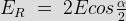
Now, as per definition of pitched factor,

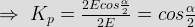
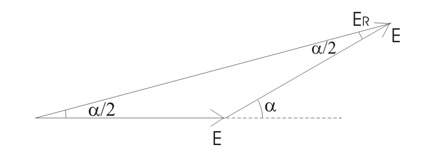
This pitch factor is for the fundamental component of emf. The flux wave may consists of space field harmonics also, which give rise to the corresponding time harmonics in the generated voltage wave form. A 3rd harmonic component of the flux wave, may be imagined as produced by 3 poles as compared to one pole for the fundamental component.
In the view of this, the chording angle for the rth harmonic becomes r times the chording angle for the fundamental component and pitch factor for the rth harmonic is given as,
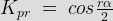
The rth harmonic becomes zero, if,
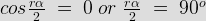
In 3 phase alternator, the 3rd harmonic is suppressed by star or delta connection as in the case of 3 phase transformer. Total attention is given for designing a 3 phase alternator winding design, for 5th and 7th harmonics.
For 5th harmonic
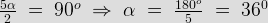
For 7th harmonic
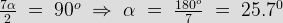
Hence by adopting a suitable chording angle of α = 30°, we make most optimized design armature winding of alternator.
Distribution Factor
If all the coil side of any one phase under one pole are bunched in one slot, the winding obtained is known as concentrated winding and the total emf induced is equal to arithmetic sum of the emfs induced in all the coils of one phase under one pole.
But in practical cases, for obtaining smooth sinusoidal voltage wave form, armature winding of alternator is not concentrated but distributed among the different slots to form polar groups under each pole. In distributed winding, coil sides per phase are displaced from each other by an angle equal to the angular displacement of the adjacent slots. Hence, the induced emf per coil side are not an angle equal to the angular displacement of the slots.
So, the resultant emf of the winding is the phasor sum of the induced emf per coil side. As it is phasor sum, must be less than arithmetic sum of these induced emfs.
Resultant emf would be arithmetic sum, if the winding would have been a concentrated one.
As per definition, distribution factor, is measure of resultant emf of a distributed winding in compared to a concentrated winding.
It is expressed as ratio of the phasor sum of the emfs induced in all the coils distributed in a number of slots under one pole to the arithmetic sum of the emfs induced. Distribution factor is,

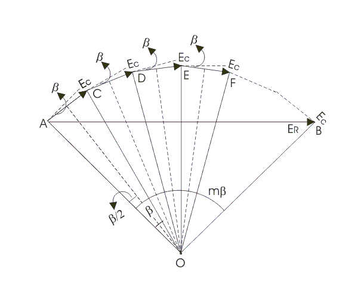
As pitch factor, distribution factor is also always less than unity.
Let number of slots per pole is n.
Number of slots per pole per phase is m.
Induced emf per coil side is Ec.
Angular displacement between the slots,
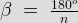
The emfs induced in different coils of one phase under one pole are represented by AC, DC, DE, EF and so on. They are equal in magnitude but differ from each other by an angle β.
If bisectors are drawn on AC, CD, DE, EF--------. They would meet at common point O.
Emf induced in each coil side,
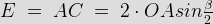
As the slot per pole per phase is m, the total arithmetic sum of all induced emfs per coil sides per pole per phase,
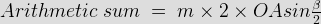
The resultant emf would be AB, as represented by the figure,
Hence, the resultant emf
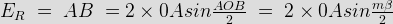


mβ is also known as the phase spread in electrical degree.
The distribution factor Kd given by equation is for the fundamental component of emf.
If the flux distribution contains space harmonics the slot angular pitch β on the fundamental scale, would become rβ for the rth harmonic component and thus the distribution factor for the rth harmonic would be.

Therefore, winding factor
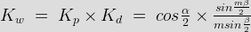
 by
by